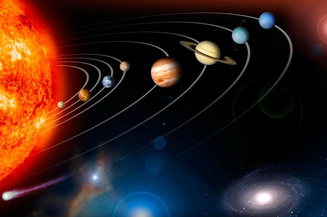

O Sistema Solar é constituído essencialmente pelo Sol e pelo
conjunto de corpos que estão sob influência de seu campo gravitacional.
Dentre estes, os oito planetas são os componentes mais massivos do sistema,
divididos em planetas telúricos(os quatro menores e mais próximos do Sol,
predominantemente rochosos) e gigantes gasosos
(os quatro maiores e mais afastados do Sol).
A maior parte exerce força gravitacional suficiente para manter uma
camada de gases ao seu redor, ou seja, possuem atmosfera,
e também satélites naturais orbitando-os.
Enquanto a Terra e Marte apresentam somente um
e dois satélites naturais respectivamente,
os gigantes gasosos possuem dezenas cada um,
nas mais variadas formas, composições e tamanhos.
Existem ainda cinco corpos que, de acordo com os padrões
da União Astronômica Internacional, se enquadram na categoria de planetas
anões e que, na sua maioria, também exibem satélites naturais.
Vários asteroides se fazem igualmente acompanhar por pequenas luas.
Os quatro planetas gigantes possuem, ainda, sistemas de anéis planetários,
formados essencialmente por partículas de gelo e poeira com dimensões máximas de alguns centímetros,
que orbitam o planeta no plano de seu equador.
Espalhados por toda extensão do Sistema Solar existem milhares de corpos menores,
como asteroides e cometas, além da poeira interplanetária e de matéria proveniente do Sol
que permeiam o espaço entre os corpos.

* Por muito tempo acreditou-se que a Terra fosse o centro do universo, e que todos os astros eram influenciados por esta. Essa teoria ficou conhecida como Geocentrismo, cujo principal expoente foi Claudio Ptolomeu.
Essa teoria perdurou durante muito tempo na história da humanidade, sendo refutada pela teoria do Heliocentrismo, especialmente com os debates formulados por Nicolau Copérnico, a qual defendia que o Sol era o centro do universo, e que os demais astros giravam ao entorno deste, influenciados pelo seu campo gravitacional.

O componente central e principal fonte de energia do Sistema Solar, o Sol, embora seja o astro mais luminoso quando visto do nosso planeta, é uma estrela relativamente pequena e comum na Via Láctea, com um raio de aproximadamente setecentos mil quilômetros. É constituído essencialmente por hidrogênio e hélio ionizados, mantidos coesos sob forma aproximadamente esférica graças à ação da gravidade. Consequentemente, a imensa pressão e temperatura em seu núcleo são suficientes para que ocorra o processo de fusão nuclear, no qual há a conversão de núcleos de hidrogênio em núcleos de hélio e liberação de energia. A estrela emite radiação em praticamente todo o espectro eletromagnético, sobretudo na forma de luz visível.
Dentre as camadas que compõem o Sol, o núcleo, onde ocorrem as reações de fusão, é a mais interna, atingindo uma temperatura de cerca de quinze milhões de graus Celsius. A energia produzida nessa região transfere-se para a zona de radiação, através da qual atinge a camada subsequente, denominada zona convectiva, que, por sua vez, a transporta até a fotosfera, a superfície visível do Sol por onde escapa a radiação que ilumina todo o Sistema Solar. O campo magnético da estrela faz com que surjam manchas (regiões mais escuras na fotosfera) e proeminências solares que, por sua vez, podem dar origem a uma ejeção de massa coronal. Tais eventos estão geralmente associados aos ciclos solares, cujo pico de atividade ocorre a cada onze anos. Circundando o Sol encontram-se a cromosferae a coroa solar, duas camadas de gases que constituem a atmosfera da estrela, praticamente invisíveis por conta do ofuscamento provocado pelo brilho superficial. Dessa coroa emanam correntes de partículas eletricamente car regadas, a uma temperatura de dois milhões de graus Celsius, responsáveis pelo vento solar que se espalha com grande velocidade e atinge os confins do sistema.
Não se sabe com certeza como os planeta se formam. A teoria predominante é que eles são formados quando do colapso de uma nebulosa em um disco fino de gás e pó.
Uma protoestrela se forma no núcleo, cercada por um disco protoplanetário giratório. Por meio de acreção (um processo de aglutinação por colisão),
partículas de poeira do disco acumulam massa continuamente, formando corpos cada vez maiores. Formam-se concentrações de massa, conhecidas como planetesimais,
as quais aceleram o processo de acreção ao atrair material adicional com a sua força gravitacional. Essas concentrações se tornam cada vez mais densas,
até que elas colapsam para seu interior devido à gravidade, formando protoplanetas. Quando um planeta atinge um diâmetro maior do que a Lua da Terra,
ele começa a acumular uma atmosfera, aumentando muito a frequência de captura de planetesimais, por meio do arrasto atmosférico.
Quando a protoestrela cresceu a ponto de se inflamar para formar uma estrela, o disco remanescente é expulso por fotoevaporação, vento solar,
arrasto de Poynting-Robertson e outros efeitos. Daí em diante, pode haver muitos protoplanetas orbitando a estrela ou um ao outro, mas com o tempo muitos vão colidir,
formando um único planeta maior ou liberando material que será absorvido por outros protoplanetas ou planetas. Os objetos que tiverem massa suficiente vão capturar a maior parte do material na sua vizinhança orbital,
tornando-se planetas. Enquanto isso, os protoplanetas que evitarem as colisões podem se tornar satélites naturais de planetas por um processo de captura gravitacional,
ou permanecer em cinturões com outros objetos, tornando-se planetas anões ou corpos menores do Sistema Solar.
O impacto energético dos pequenos planetesimais, bem como a desintegração radioativa, aquece o crescente planeta, fazendo com que ele se funda, pelo menos parcialmente.
O interior do planeta começa a se diferenciar pela massa, desenvolvendo um núcleo mais denso. Os planetas terrestres menores perdem a maior parte da sua atmosfera por causa desta acreção,
mas os gases perdidos podem ser repostos pela perda de gás do manto e pelos impactos subsequentes de cometas. Os planetas menores perdem qualquer atmosfera que eles ganhem por meio de vários mecanismos de escape.
Com a descoberta e observação de sistemas planetários em torno de outras estrelas, torna-se possível elaborar, revisar ou mesmo substituir este processo.
Acredita-se atualmente que o nível de metalicidade - um termo astronômico que descreve a abundância de elementos químicos com número atômico maior que 2 (hélio) - determine a probabilidade de uma estrela possuir planetas.
Assim, uma estrela da População I, rica em metal, provavelmente possui um sistema planetário mais substancial do que uma estrela da População II, pobre em metal.
De acordo com as atuais definições da UAI, existem oito planetas e cinco planetas anões no Sistema Solar.
Em ordem crescente da distância do Sol, os planetas são:
Júpiter é o maior, com 318 vezes a massa da Terra, enquanto Mercúrio é o menor, com 0,055 massa da Terra.
Os planetas do Sistema Solar podem ser divididos em categorias com base em sua composição:
- Terrestres ou Telúricos: planetas similares à Terra, com corpos em sua maioria compostos de rochas:
Mercúrio, Vênus, Terra e Marte.
A Terra é o maior planeta terrestre.
- Gigantes gasosos: planetas compostos em sua maior parte de materiais gasosos, substancialmente maiores do que os terrestres:
Júpiter, Saturno, Urano e Netuno. Júpiter é o maior deles, com massa 318 vezes a da Terra, e Saturno o segundo, com 95 vezes a massa da Terra.
- Gigantes de gelo, contemplando Urano e Netuno: são uma subclasse dos gigantes gasosos, distinguindo-se desses por sua massa muito menor (apenas 14 e 17 vezes a da Terra)
e pelo esgotamento do hidrogênio e hélio em sua atmosfera, além de uma proporção significativamente maior de rocha e gelo.
- Planetas anões: antes da decisão de agosto de 2006, vários objetos foram propostos como planetas por astrônomos, inclusive, numa primeira etapa, pela UAI.
Entretanto, em 2006 vários desses objetos foram reclassificados como planetas anões, objetos distintos dos planetas.
Atualmente são reconhecidos pela UAI cinco planetas anões no Sistema Solar: Ceres, Plutão, Haumea, Makemake e Éris.
Vários outros objetos, tanto no Cinturão de Asteróides quanto no Cinturão de Kuiper, estão sendo avaliados, sendo que cerca de 50 podem se qualificar.
Cerca de 200 podem ser descobertos quando o Cinturão de Kuiper tiver sido totalmente explorado. Planetas anões compartilham muitas das características dos planetas,
embora existam diferenças notáveis - especialmente que eles não são dominantes em suas órbitas. Por definição, todos os planetas anões são parte de populações maiores.
Ceres é o maior corpo no Cinturão de Asteroides, enquanto Plutão, Haumea e Makemake são membros do Cinturão de Kuiper e Éris é membro do disco disperso.
Cientistas como Mike Brownacreditam que num futuro próximo mais de 40 objetos transnetunianos devem se qualificar como planetas anões segundo a definição da UAI.